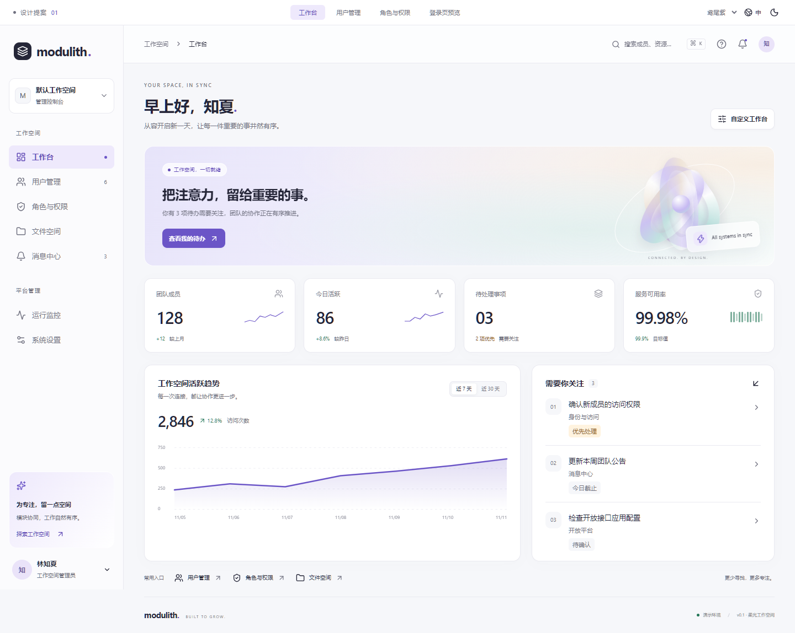
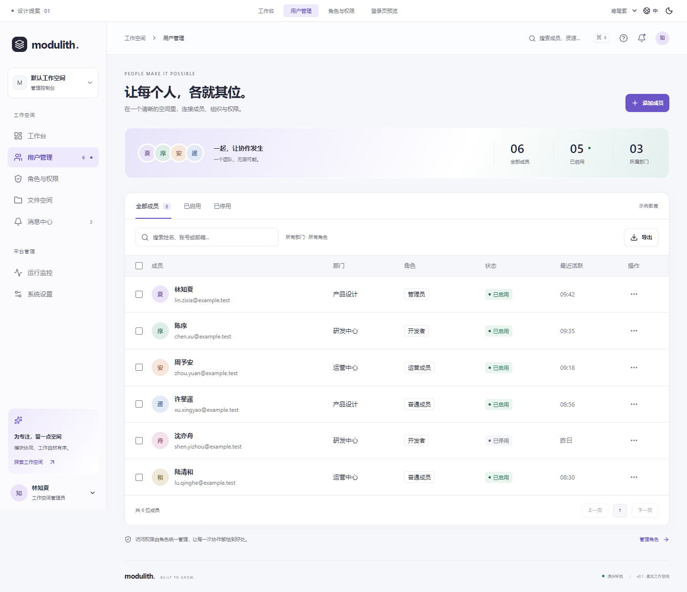
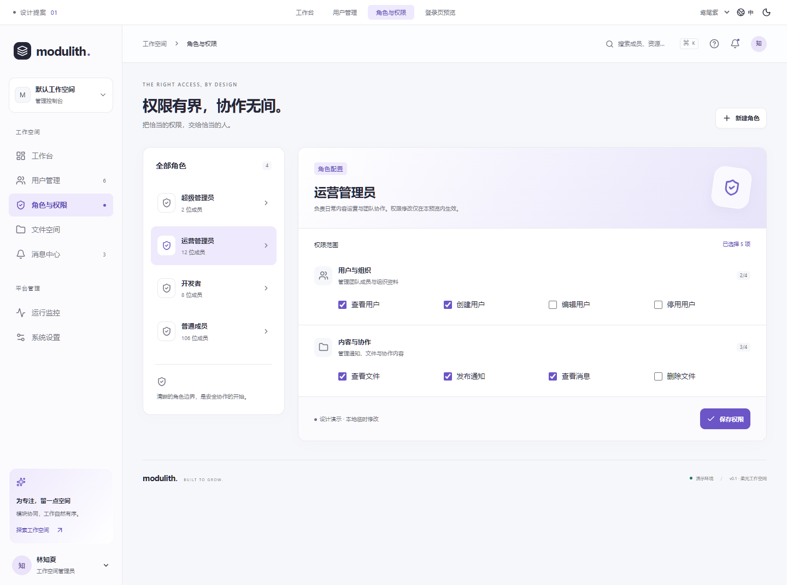
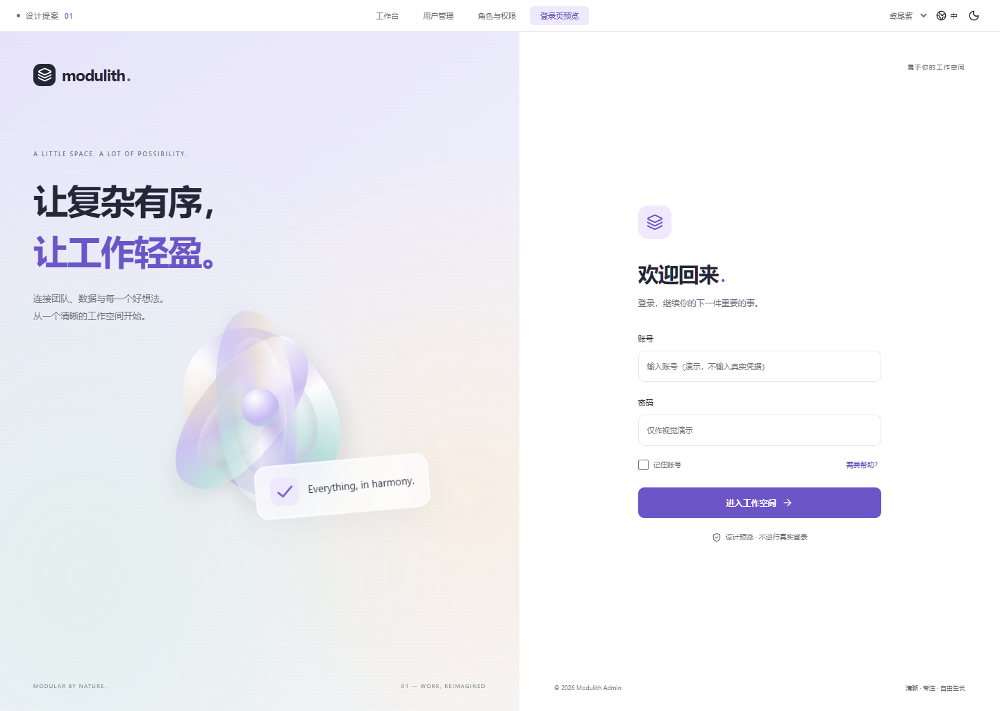
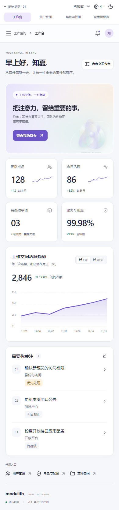
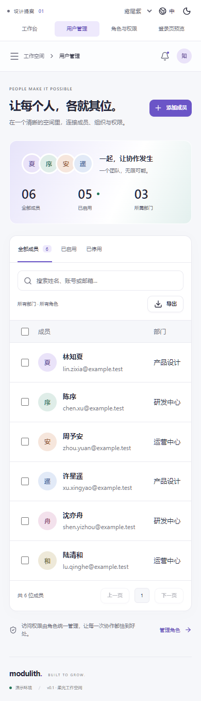
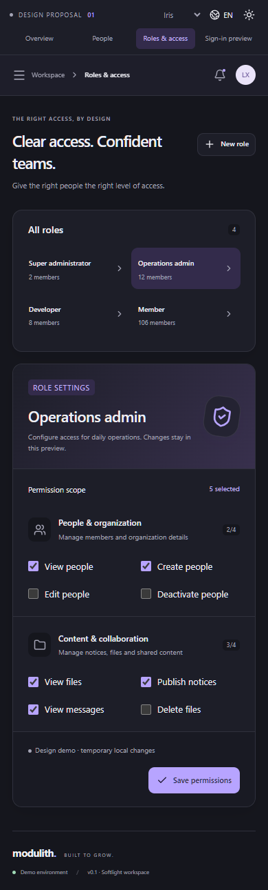
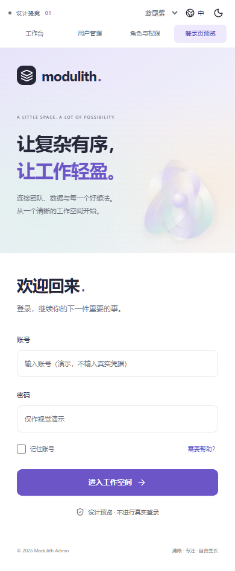

01 / 工作台 — 让信息有轻重

02 / 用户管理 — 让高频操作保持清晰

03 / 角色权限 — 把范围与结果放在眼前

04 / 登录页 — 给工作空间一个鲜明的入口

05 / 小屏幕，同一种秩序




柔光工作空间：雾白与石墨、鸢尾紫、局部玻璃与柔和立体形体。四类真实渲染的页面样板。
评审稿 · 所有数据均为演示 · 尚未替换正式前端。交互样板需要本地 5186 服务运行；本截图册可离线查看。







